Руководство по Carino DICOM
Carino DICOM — это шлюз DICOM и устройство непрерывности работы: принимает исследования, маршрутизирует и пересылает их, отдаёт хранимое по Query/Retrieve и DICOMweb и позволяет отделению лучевой диагностики работать, когда PACS или РИС перестают отвечать. Это руководство охватывает развёртывание, модель безопасности, каждую службу и реальные пределы программы.
Все снимки экрана в этом руководстве сделаны с работающего экземпляра этой программы, а исследования на них придуманы для съёмки. Ни один пациент в руководстве не показан.
Содержание
1. Что это такое и какую роль играет
Carino DICOM стоит между оборудованием, которое создаёт изображения, и системами, которые их хранят или читают. Он не пытается заменить ваш архив; он пытается быть тем звеном, которое их связывает, и тем, что останется на ногах, когда упадёт что-то из остальных.
У него две роли, и различие между ними важно: именно оно определяет, какие службы вы включите.
- Постоянный шлюз. Принимает по C-STORE, раскладывает на диск по схеме пациент / исследование / серия, пересылает на одно или несколько назначений по правилам, обезличивает уходящую копию, когда его об этом просят, и отдаёт хранимое по Query/Retrieve (для старого оборудования) и DICOMweb (для современных просмотрщиков).
- Страховочная сеть. Если основной PACS перестал отвечать, он может поднять собственный Modality Worklist, чтобы лаборанты продолжали снимать, удержать всё, что придёт во время аварии, и переслать это, как только основной узел вернётся. Он также принимает заявки HL7 по MLLP — или введённые вручную, — когда из строя вышла РИС.
Всем управляет один config.json, и всё работает без графического интерфейса. Веб-панель
удобна, но не обязательна.
Порты по умолчанию
| Служба | Порт | Протокол |
|---|---|---|
| Приём (Storage SCP) | 11112 | DICOM / DIMSE |
| Виртуальная печать | 11113 | DICOM Print |
| Modality Worklist | 11114 | DICOM C-FIND |
| Запрос/выдача | 11115 | DICOM C-FIND/C-MOVE/C-GET |
| Аварийная РИС | 2575 | HL7 поверх MLLP |
| Панель + DICOMweb | 8042 | HTTP |
Почему 11112, а не 104. Зарегистрированный порт для DICOM — 104, а он
привилегированный в Linux и macOS и требует root. Значение по умолчанию этого избегает.
Настройте оборудование соответственно или пробросьте 104 на 11112 в
контейнере или на брандмауэре.
2. Начало работы
Выберите вариант развёртывания
| Вариант | Для чего подходит | Поднимается после отключения питания |
|---|---|---|
| Настольное приложение (в трее) | Рабочая станция, за которой кто-то сидит: один кабинет, одна клиника, пробный запуск. | Только с «запуском при входе» |
| Docker / Podman | Сервер или любая машина, где его нужно изолировать и переносить целиком. | Да (restart: unless-stopped) |
| Служба systemd | Постоянный ПК в углу отделения лучевой диагностики, где никто не входит в систему. | Да |
Настольное приложение
Скачайте пакет для вашей системы со страницы releases и откройте его. Оно сворачивается в системный трей; по клику открывается панель. Приложение пока не подписано цифровой подписью, поэтому Windows и macOS предупреждают при первом запуске — на главной странице есть точные шаги, как всё-таки его открыть.
Docker
git clone https://github.com/MiguelCarino/Carino-PACS
cd Carino-PACS
mkdir -p data && sudo chown -R $(id -u):$(id -g) data
docker compose up -d
docker compose logs -f pacsПри первом запуске создаётся и печатается в журнал токен доступа. Откройте
http://127.0.0.1:8042/ и вставьте его, когда панель попросит. Всё — конфигурация,
исследования, журналы, индекс — лежит в ./data, и именно с него делается резервная
копия.
Самый частый сбой первого запуска — каталог ./data, принадлежащий root:
контейнер никогда не работает от root и падает с EACCES. Если uid вашей учётной
записи не 1000, укажите PACS_UID и PACS_GID в файле
.env и пересоберите. На хостах с SELinux (Fedora, RHEL, Rocky) суффикс тома
:z — не украшение: без него в примонтированный каталог нельзя писать, хотя
владелец и права выглядят совершенно правильно.
Служба systemd (Linux)
git clone https://github.com/MiguelCarino/Carino-PACS.git
cd Carino-PACS
sudo packaging/systemd/install.shУстановщик создаёт системного пользователя carino-pacs, копирует код в
/opt/carino-pacs, готовит /var/lib/carino-pacs и ставит юнит…
но не запускает его. Это не недосмотр: запуск PACS открывает порты, принимающие
данные пациентов, и такое решение принимается после чтения конфигурации, а не до. Отредактируйте
/var/lib/carino-pacs/config.json, затем:
sudo systemctl enable --now carino-pacs
systemctl status carino-pacs
journalctl -u carino-pacs -fПовторный запуск установщика обновляет код на месте и никогда не трогает существующий
config.json.
Где лежат данные
| Вариант | Каталог |
|---|---|
| Настольное приложение / CLI | ~/CarinoDICOM/ (существующие установки сохраняют ~/CarinoPACS) |
| Docker | /data в контейнере → ./data на хосте |
| systemd | /var/lib/carino-pacs/ (режим 0750) |
config.json лежит вместе с данными, а не в /etc, потому что
относительные пути в конфигурации ("./received", "./logs",
"./index.db") отсчитываются от каталога, в котором лежит сам файл конфигурации.
Конфигурация в /etc разбросала бы исследования пациентов по /etc.
Первый запуск, по порядку
- Выберите службы. Всё поставляется выключенным. Окно выбора служб в панели спрашивает, что должна запускать эта машина; включите только это.
- Добавьте назначения (имя, хост, порт, AE title) на вкладке Назначения в разделе Конфигурация — именно этой вкладкой раздел и открывается.
- Проверьте связь через C-ECHO, прежде чем передавать хотя бы одно
изображение:
./run.sh echo --name "Hospital PACS". Если C-ECHO не проходит, дело не в Carino — дело в сети, брандмауэре или AE title. - Направьте сюда один аппарат, указав AE title приёмника, IP и порт, и отправьте тестовое исследование.
- Следите за журналом — вкладка Журнал в разделе Активность. Если что-то не сработало, это появится там; эта программа скорее закричит, чем тихо откажет.
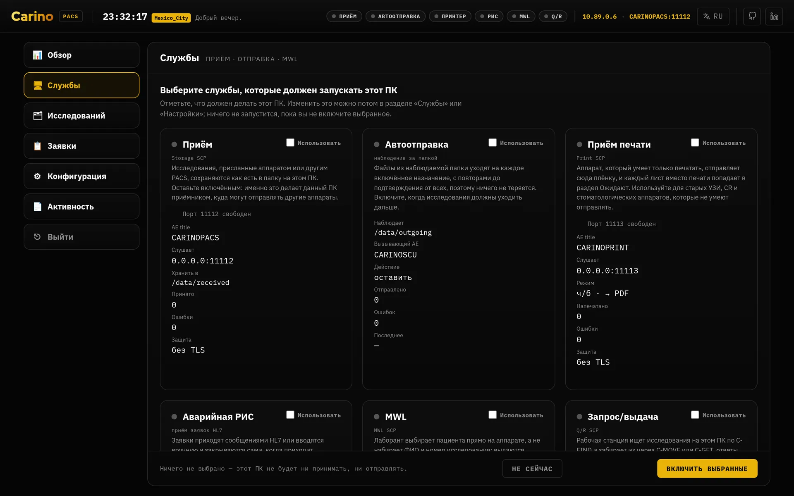
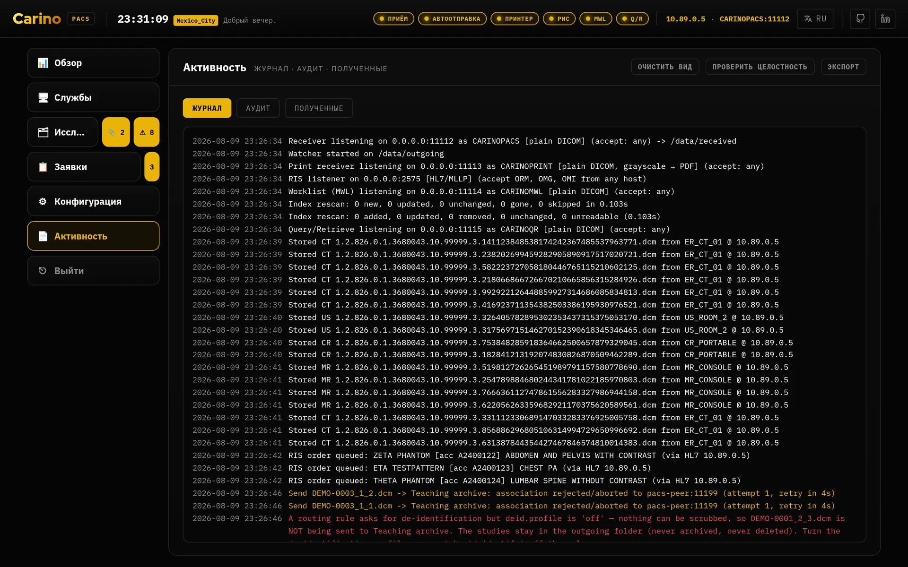
Без графического интерфейса
./run.sh init # создаёт config.json и его папки
./run.sh init --token # и генерирует web.auth_token
./run.sh serve # панель на http://127.0.0.1:8042
./run.sh receive # только приём
./run.sh send # только наблюдение за папкой / пересылка
./run.sh qr # только Запрос/выдача
./run.sh mwl # только рабочий список
./run.sh ris # только приём заявок HL7
./run.sh print # только виртуальная печать
./run.sh echo --host 10.0.0.5 --port 104 --aet REMOTEPACSКаждая команда принимает -c / --config <путь>. В Windows —
run.ps1.
3. Модель безопасности и правило токена
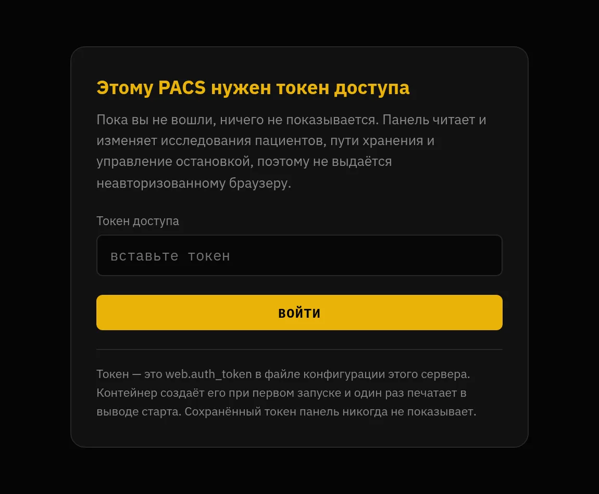
Начнём с главного: панель — это ключ от архива. Любой, кто её откроет, может прочитать каждое сохранённое исследование, скачать файлы DICOM, изменить любую настройку, запустить и остановить службы, удалить исследования и выключить сервер. Из коробки существует один общий секрет, и тот, у кого он есть, может всё — профили необязательны и выключены, пока вы их не включите. Как только вы это сделаете, каждый входит под собой — со своими разрешениями, со своим доступом к идентификаторам пациента и со своим именем в журнале аудита; общий токен продолжает работать как администратор, поэтому ничего из того, что уже им пользуется, не ломается.
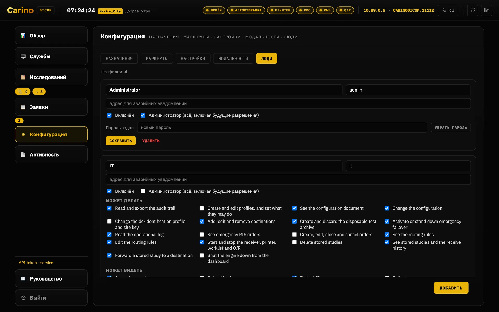
*** везде, где оно появилось бы.Разрешения определяют и то, что панель рисует. Профиль видит только те разделы боковой панели и
только те вкладки внутри них, на которые у него есть разрешения: Рентгенолог, у которого есть
routing.read, но нет config.read, получает Конфигурацию с
Назначениями и Маршрутами и без вкладки Настройки, а Регистратура, не
имеющая ни одного из трёх, вообще не видит раздела Конфигурация. Индикаторы служб в
верхней шапке — намеренное исключение, см. Веб-панель ниже.
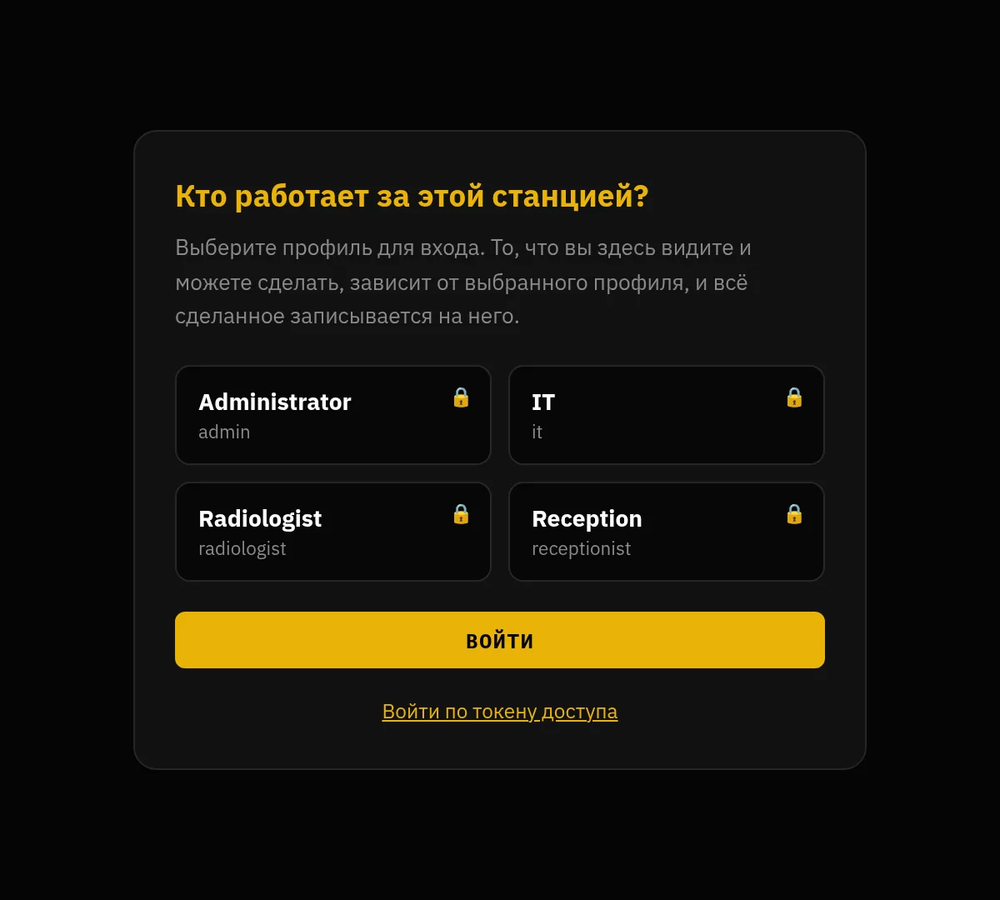
users.list_profiles: публиковать состав сотрудников для всех, кто дотянется до порта, — это реальное раскрытие, и решать вам. Токен по-прежнему работает, спрятанный ниже, потому что это путь обратно, когда кто-то закрыл себе вход.Правило
Пустой web.auth_token допустим, только пока web.host — это
петлевой адрес. Если web.host — что-либо другое: 0.0.0.0, адрес в
локальной сети, имя хоста — а токен пуст, сервер отказывается запускаться. Этот
отказ — свойство программы, а не ошибка, которую надо обойти.
Причина вполне конкретна. Без аутентификации на 127.0.0.1 контролем доступа служит
операционная система: до API дотянется только процесс на этой машине. Это оправданно. Но
web.host задаёт оператор, и в тот момент, когда кто-нибудь меняет его на
0.0.0.0, чтобы «зайти с другого ПК» — второпях, во вторник, не думая о безопасности, —
тот же API выдаёт любому соседу по локальной сети список исследований, пути хранения, байты DICOM
и /api/shutdown. Правило существует потому, что такое изменение занимает десять
секунд, а последствия остаются на годы.
Любой контейнер всегда находится именно в этом положении: контейнер по своей
природе публикует службу на 0.0.0.0. Поэтому образ при первом запуске создаёт
256-битный токен, если вы не задали свой, — и печатает его. А вот молча он токен не
создаёт никогда: секрет, которого никто не видел, — это секрет, который никто не меняет.
Создание и предъявление токена
./run.sh init --token # записывает его в config.json
python3 -c "import secrets; print(secrets.token_urlsafe(32))"
openssl rand -base64 32Сервер принимает учётные данные тремя способами:
Authorization: Bearer <token>X-Carino-Token: <token>- сессионный файл cookie, выданный
POST /api/login
Файл cookie существует для того, чтобы панель спрашивала токен один раз вместо того, чтобы держать его в JavaScript, где его прочитает любой XSS и любое расширение браузера. Он никогда не несёт сам токен: он несёт HMAC по секрету, созданному при старте и хранимому только в памяти. Поэтому перезапуск завершает все сессии — верный компромисс для устройства с одним оператором: никакого хранилища сессий на диске, нечему утечь, а в худшем случае токен придётся ввести заново раз в смену.
Панель говорит по обычному HTTP. Встроенного TLS для веб-уровня нет. Если вы открываете её за пределы петлевого адреса, поставьте перед ней обратный прокси, который завершает HTTPS. Токен, переданный по открытому HTTP в общей сети, — это токен, который вы отдали.
Сторона DICOM
allowed_aets— список разрешённых вызывающих AE title. Пустой означает «принимать любого». Это полезный фильтр, а не аутентификация: DICOM не проверяет подлинность вызывающей стороны.- DICOM-TLS — доступен с обеих сторон независимо, включая взаимный TLS с
клиентским сертификатом. Используется тот же порт: незашифрованная сторона не
договорится с приёмником по TLS, и наоборот. TLS шифрует и аутентифицирует транспорт, а
не приложение — для настоящего контроля доступа сочетайте его с
allowed_aetsили клиентскими сертификатами. - Брандмауэр — службы DICOM по умолчанию слушают на
0.0.0.0(хотя ни одна не работает, пока вы её не включите). Для того, до чего должны дотягиваться аппараты, это правильно, а значит, ограничить их подсетью аппаратов — ваша задача.
Что эта модель не защищает
- Профили выключены, пока вы их не включите. До этого на всё устройство один общий секрет и никаких учётных записей, ролей и разрешений. Так и остаётся по умолчанию, потому что молчаливое включение при обновлении сломало бы каждого машинного клиента на площадке.
- Нет интеграции со службой каталогов. Учётные записи живут на самом устройстве. Нет ни LDAP, ни Active Directory, ни единого входа, ни способа централизованно отключить человека, когда он уходит.
- Журнал аудита можно обрезать. Он ловит запись, изменённую на месте, изъятую из середины, переставленные записи и файл, оборванный посреди строки, — каждое из этого ломает хеш, и Проверить целостность называет запись и причину. Он не поймает удаление нескольких последних записей, потому что оставшееся — по-настоящему корректная цепочка, и он не остановит полную перезапись тем, у кого есть доступ на запись в папку аудита. Если вам нужна неотказуемость, скопируйте вершину цепочки туда, куда эта машина писать не может, и сравните позже.
- Шифрования на диске нет. Исследования — это обычные файлы DICOM, индекс
sqlite хранит имена и идентификаторы в открытом виде, заявки — это JSON, а
config.jsonсодержит токен открытым текстом. Шифруйте том под ними (LUKS, BitLocker, FileVault) и ограничьте права на каталог данных. - У приёмника HL7/MLLP нет ни TLS, ни учётных данных. Это сокет TCP с
обрамлением MLLP. Его единственный контроль —
allowed_hosts, проверка адреса подключающейся стороны, а такой адрес можно подделать. Любой, кто может открыть соединение с этим портом, может внедрить заявки, которые появятся в рабочем списке. Держите его в доверенном клиническом сегменте и закройте брандмауэром. - Обезличивание не трогает пиксели. См. эту службу ниже: впечатанные в изображение данные пациента переживают любой профиль.
Резервные копии. Индекс sqlite — это кеш, и он восстанавливается сам; изображения — нет. Делайте резервные копии каталогов хранения — и хотя бы раз проверьте восстановление.
Никакой телеметрии. Carino DICOM никуда ничего не отправляет: ни аналитики, ни отчётов о сбоях, ни проверок обновлений, ни сторонних скриптов, подгружаемых во время работы. Единственные исходящие соединения — это ассоциации DICOM и подтверждения HL7, которые вы настроили, к названным вами узлам. Изменение, нарушившее бы это, считалось бы уязвимостью.
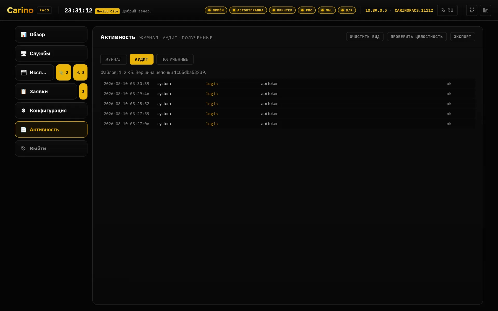
4. Службы, одна за другой
Всё, что открывает порт, поставляется выключенным. Правильный вопрос не «что оно умеет?», а «что должна делать эта машина?». Каждая включённая служба — это ещё один открытый порт. Индекс ниже — единственное исключение: он запускается сам, потому что это локальный кеш sqlite, который ничего не слушает.
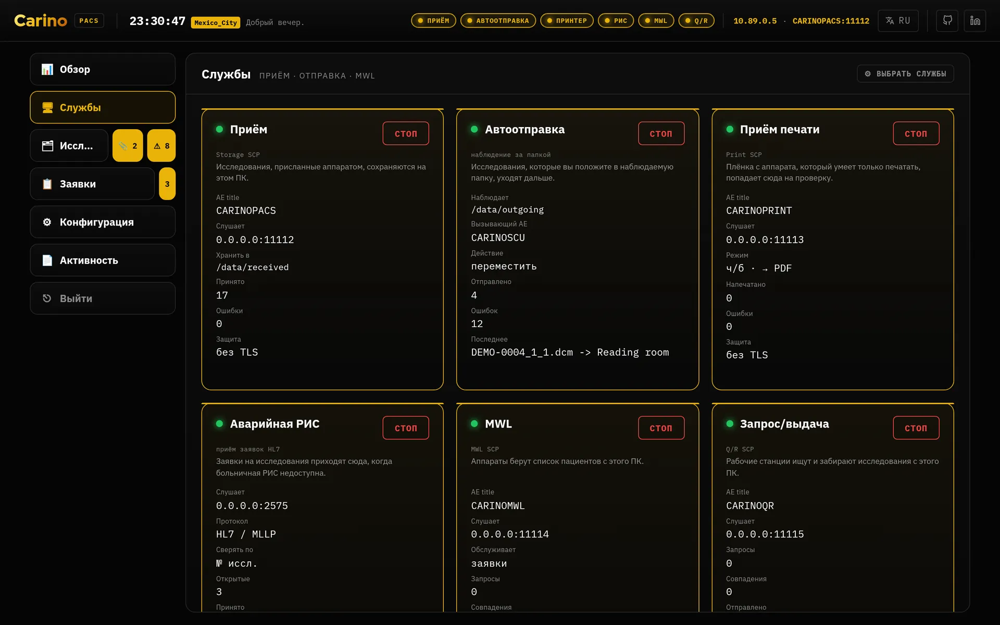
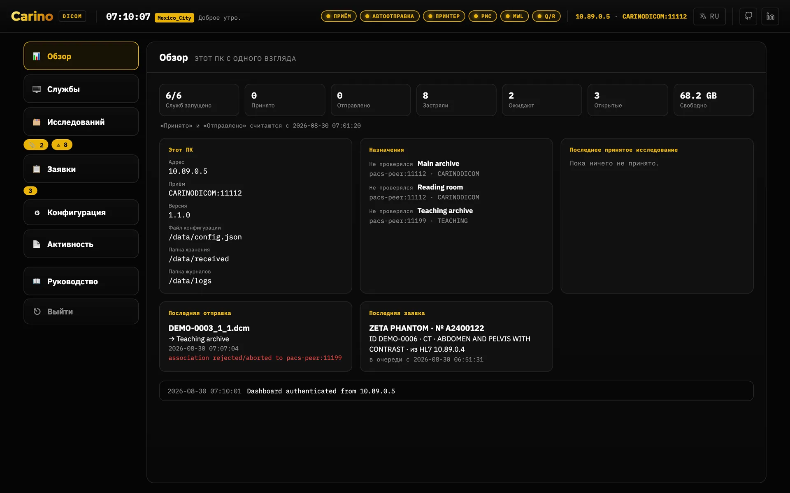
Приём — Storage SCP
Порт 11112 · C-STORE, C-ECHO
- Что делает
- Принимает исследования, которые присылают аппараты, и раскладывает их на диск — при желании по схеме пациент / исследование / серия. Он принимает все синтаксисы передачи и сохраняет сжатые объекты как есть — без перекодирования, поэтому по пути внутрь ничего не меняется.
- Включайте, когда
- Сюда что-либо должно отправлять изображения: аппараты, другой PACS, рабочая станция. Это основная служба.
- Оставьте выключенным, когда
- Эта машина только пересылает то, что кто-то другой кладёт в папку.
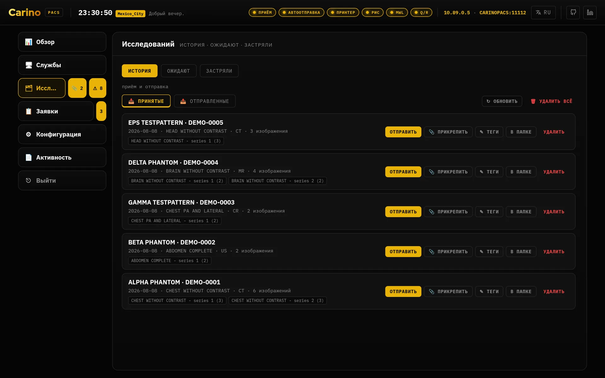
Автоотправка — Storage SCU и правила маршрутизации
Исходящий клиент · C-STORE
- Что делает
- Наблюдает за папкой и пересылает каждый новый файл на те назначения, которые подходят. Файл уходит, только когда он стабилен (размер не изменился между двумя сканированиями), поэтому недописанный файл никогда не пересылается. Прогресс отслеживается по каждому назначению: файл считается обработанным, только когда его приняло каждое включённое назначение, а отправка на недоступные узлы повторяется на следующем сканировании. При успехе оригинал можно оставить, переместить или удалить.
- Правила
- При включённой маршрутизации правило выбирает назначения по модальности, вызывающему AE
title, станции, ID пациента или описанию исследования (шаблоны
*и?, без учёта регистра). Например: CT изER_*— в учебный архив, обезличенно. - Гарантия
- Исследование никогда не может остаться неотправленным. Маршрутизация выключена, ни одно правило не совпало, заголовок не читается, правило называет назначение, которого больше нет, — в каждом из этих случаев файл уходит на все включённые назначения. Лишняя отправка раздражает оператора; недостаточная теряет изображение.
- Единственное исключение
- Правило, которое требует обезличивания для назначения, когда очистку выполнить нельзя,
удерживает это назначение: ему не отправляется ничего, вместо того чтобы
отправить с данными пациента. Очистке мешают две вещи — профиль в состоянии
offили профиль включён, но из настроек не удаётся построить деидентификатор, — и исправляются они по-разному. Ничего не теряется ни в том, ни в другом случае; см. Обезличивание при пересылке ниже. - Включайте, когда
- Эта машина должна доставлять изображения дальше: в центральный PACS, на рабочую станцию врача или копиями в учебный архив.
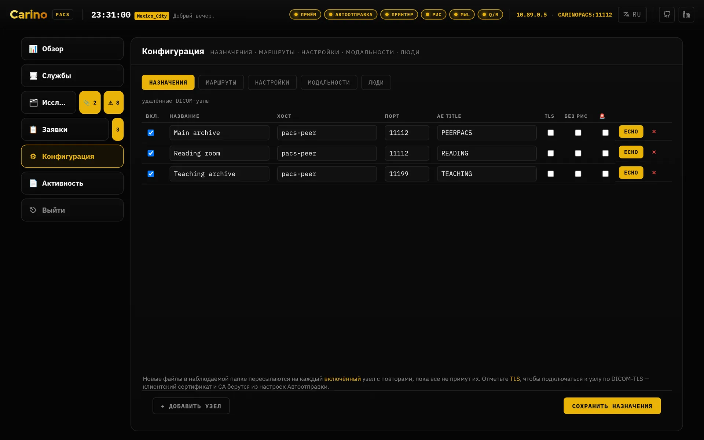
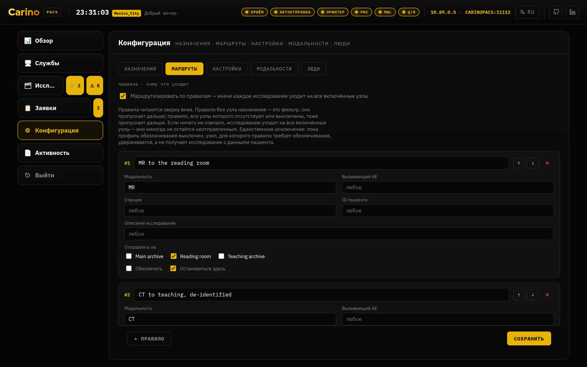
![Вкладка Застряли раздела Исследований под баннером «5 файлов требуют внимания», разделённая надвое: «Повтор идёт автоматически» — с учебным архивом, двумя ожидающими объектами, его последней ошибкой красным, кнопкой «Повторить сейчас» и обратным отсчётом до следующей попытки; и «Удержано — ничего не отправляется» — с главным архивом, помеченным «профиль выключен», тремя ожидающими объектами, названными файлами .dcm, абзацем с правкой, которая их освободит, и двумя кнопками: «Настройки обезличивания» и «Правило, которое этого требует».](../img/ru/stuck.webp)
Обезличивание при пересылке
Профиль PS3.15 Annex E · применяется только к уходящей копии
- Что делает
- Применяет Basic Application Level Confidentiality Profile к отправляемому объекту и
записывает в
(0012,0064), какие именно опции сохранения были использованы, чтобы получатель видел, что осталось. Сохранённый оригинал никогда не переписывается — в этой асимметрии вся суть. - Профили
basicсохраняет даты (полностью или со сдвигом), характеристики пациента, сведения об устройстве и об учреждении.strictубирает сведения об устройстве и учреждении и удаляет частные атрибуты, даже если вы просили их сохранить.- Включайте, когда
- Изображения покидают клиническую среду: обучение, научная работа, поставщик, внешнее второе мнение.
- Выключение
- Профиль решает, происходит ли очистка вообще; отметка Обезличить у правила решает,
какие назначения получат очищенную копию. Поставьте профиль в
off, пока правило всё ещё этого требует, — и Carino удержит это назначение, а не отправит копию с данными пациента на узел, владельцу которого сказали, что таких данных он не получает.
Удержано, а не отправлено, — и это ответ, когда исследования перестают двигаться. Назначение, для которого правило требует обезличивания, не получает ничего всякий раз, когда очистку выполнить нельзя. Доставка откладывается, личность не раскрывается: исследование, ждущее на диске, освобождается одной правкой, а имя, дошедшее до внешнего узла, никакой правкой не вернуть.
Очистка не может произойти по двум причинам, и исправляются они по-разному. Каждое удержание записывает, какая именно это причина, и вкладка Застряли раздела Исследований показывает способ исправления именно для записанной причины, а не гадает:
- Профиль в состоянии
off, а правило всё ещё требует очистки. Поставьте профиль вbasicилиstrict— и следующий проход автоотправки их освободит. - Профиль включён, но из текущих настроек не удалось построить деидентификатор, поэтому очищать по-прежнему нечем. Ошибка, которая этому помешала, есть на вкладке Журнал раздела Активность, на канале отправки, — исправьте её. Выключение профиля это не освободит: оно не освобождает ничего и лишь меняет то, какая из двух половин мешает очистке.
Снятая у правила отметка Обезличить освобождает любое из этих удержаний — и освобождает исследования с данными пациента, то есть даёт ровно тот исход, ради предотвращения которого удержание и существует. Делайте эту правку, только если это назначение действительно больше не должно получать очищенные данные.
Какая бы из этих правок ни была верной, до неё один клик из строки, которая сообщает об удержании. В каждой удержанной строке есть кнопка Настройки обезличивания, открывающая вкладку Настройки раздела Конфигурация, и кнопка Правило, которое этого требует, открывающая вкладку Маршруты. Обе только открывают вкладку и не более: ни одна не прокручивает до правила, требующего очистки, и ни одна его не подсвечивает. И всё же строка, называющая проблему, ведёт в оба места, где она чинится, поэтому починка короче, чем была, когда каждое из них надо было искать в боковой панели.
Ничего не теряется, и молчания об этом нет. Исследования остаются в папке исходящих — не архивируются и не удаляются, — каждое другое назначение того же исследования всё равно их получает, вкладка Журнал раздела Активность поднимает ошибку с именем исследования, удержанного назначения и причины, набор полей обезличивания на вкладке Настройки тоже её называет, а значок ⚠ рядом с разделом Исследований считает эти файлы — и сам этот значок является кнопкой, открывающей вкладку Застряли. Само по себе удержание не снимается ничем: таймер его не отсчитывает, и никто его не повторяет.
Пиксели не очищаются. Данные пациента, впечатанные в изображение, — надпись, которую УЗИ или вторичный захват печатает внутри кадра, — переживают любой профиль, и именно так «анонимизированные» данные чаще всего уходят из больницы с именем. Опция Clean Pixel Data (113101) намеренно не заявлена, потому что она не выполняется. Внутри программы ничто не может обнаружить эту утечку за вас: изображения должен посмотреть человек. Текст внутри структурированных отчётов также не читается.
Индекс
sqlite · index.db
- Что делает
- Держит по одной записи на сохранённый файл и выводит из них ответы о пациенте, исследовании и серии, поэтому сводка исследования никогда не разойдётся с объектами, которые она сводит. Это слой запросов, стоящий за Запросом/выдачей и DICOMweb.
- Включайте, когда
- Вы пользуетесь Запросом/выдачей или DICOMweb. Это их единственная зависимость.
- Что гарантирует
- Индекс — это кеш, а не источник истины. Его потеря стоит пересканирования, но никогда — изображения.
Запрос/выдача — C-FIND, C-MOVE, C-GET
Порт 11115 · Patient Root и Study Root
- Что делает
- Позволяет другой системе спросить «какие исследования у вас есть по этому пациенту?», а затем «пришлите их мне / вон на ту рабочую станцию». Это та половина PACS, с которой старое оборудование действительно умеет разговаривать: УЗИ 2009 года или считыватель CR никогда не заговорит на DICOMweb, но на DIMSE — говорит.
- Включайте, когда
- Рабочие станции или аппараты должны забирать исследования отсюда, или вы выступаете временным архивом на время аварии основного PACS.
- Что гарантирует
- C-MOVE никогда не выдумывает список объектов — он разрешает его через индекс. Всё, о чём индекс знает, но что не читается с диска, засчитывается как неудавшаяся подоперация и называется в Failed SOP Instance UID List. Это никогда не замалчивается: C-MOVE, который отчитывается об успехе, отправив меньше изображений, чем нашёл, — худший отказ, какой эта программа может допустить.
DICOMweb — QIDO-RS, WADO-RS, STOW-RS
HTTP, по пути /dicom-web на порту панели
- Что делает
- Позволяет современным просмотрщикам (OHIF, Weasis и подобным) запрашивать, получать и сохранять по HTTP, не договариваясь об ассоциации DICOM. Загрузка по STOW-RS проходит через ту же раскладку, что и C-STORE, поэтому исследование, отправленное просмотрщиком, неотличимо от присланного аппаратом.
- Включайте, когда
- Вам нужен веб-просмотрщик поверх архива. Помните, что токен защищает и эти маршруты.
- CORS
cors_originsсверяется точно (схема + хост + порт) и по умолчанию пуст, поэтому источнику не из списка ничего не отражается. Синтаксиса шаблонов нет — но буквальная*принимается, и только потому, что вы её набрали: с этого момента отражается любой источник, и любая страница, которую откроет оператор, сможет прочитать архив с этой машины. Лучше назовите просмотрщик.- Чего не делает
/rendered,/thumbnail, bulkdata URI и перекодирование между синтаксисами передачи не реализованы и отвечают406. Наполовину работающий просмотрщик хуже отсутствующей возможности: то, что не может быть получено, никогда не подделывается.
Modality Worklist (MWL)
Порт 11114 · C-FIND рабочего списка
- Что делает
- Выдаёт заявки аппаратам, чтобы лаборант не набирал данные пациента вручную. В каждой заявке есть заранее созданный Study Instance UID, который записывается в исследование, поэтому вернувшееся с аппарата исследование сопоставляется со своей заявкой точно. Поле AE целевого аппарата направляет заявку на одну станцию; пустое означает, что её видят все станции.
- Включайте, когда
- РИС не доводит заявки до аппаратов: потому что она недоступна, потому что на площадке РИС просто нет, или чтобы проверить поток РИС→PACS без живой РИС.
Аварийная РИС — заявки HL7
Порт 2575 · HL7 ORM^O01 поверх MLLP
- Что делает
- Принимает заявки HL7 по MLLP, а также позволяет вводить их вручную в панели, когда выше по цепочке ничего живого не осталось. Когда исследование возвращается по C-STORE, оно сопоставляется со своей заявкой по номеру исследования (запасной вариант — ID пациента), и заявка закрывается и уходит в архив для аудита — но не стирается.
- Включайте, когда
- РИС недоступна или вы проверяете интеграцию.
- Что гарантирует
- Доставка изображений никогда не зависит от совпадения с заявкой. Исследование без подходящей заявки всё равно сохраняется и пересылается; заявка просто остаётся открытой для ручного сопоставления.
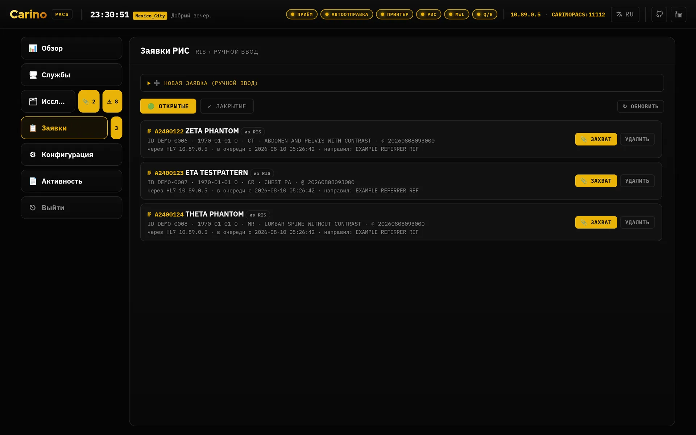
Ни TLS, ни учётных данных. См. раздел о безопасности: любой, кто может открыть сокет на этот порт, может внедрить заявки. Доверенная клиническая сеть и брандмауэр — или совсем не включать.
Аварийное переключение
Наблюдение по C-ECHO за назначением, помеченным основным
- Что делает
- Пометьте назначение основным и включите наблюдение: Carino периодически шлёт ему C-ECHO и следит за неудачами пересылки. Если он остаётся недоступным дольше порога, вы получаете предложение включить аварийную РИС. Включение запускает локальный рабочий список, чтобы лаборанты продолжали снимать, удерживает каждое исследование, принятое во время аварии, и пересылает его, как только основной узел вернётся. Когда выходить из режима — решаете вы.
- Включайте, когда
- Эта машина — шлюз к PACS, от которого вы зависите. Именно поэтому слово «непрерывность» стоит в первой строке этого руководства.
Виртуальная печать
Порт 11113 · DICOM Print, вывод в PDF
- Что делает
- Представляется принтером DICOM и захватывает всё присланное на него в PDF. Для оборудования, единственный вывод которого — плёнка, это способ сохранить хоть что-то, что можно подшить.
- Включайте, когда
- У вас есть аппарат, умеющий только печатать, чей вывод вы хотите спасти.
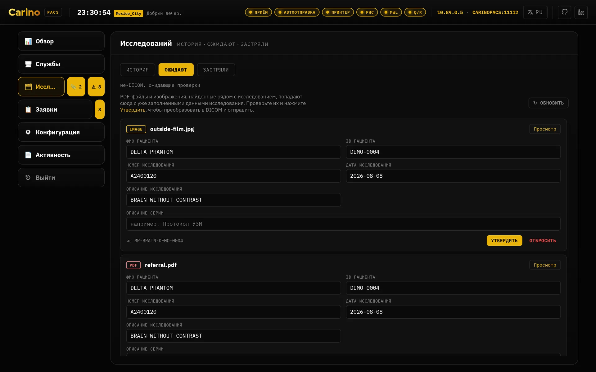
Веб-панель
Порт 8042 · HTTP, по умолчанию 127.0.0.1
- Что делает
- Состояние каждой службы, назначения, заявки, живой журнал активности, настройки и встроенный редактор DICOM. Всё, что делает панель, есть и в CLI.
- Как ориентироваться
- В боковой панели шесть разделов: Обзор, Службы, Исследований,
Заявки, Конфигурация и Активность. Три вопроса, задаваемые одной и
той же куче файлов, — это вкладки раздела Исследований: История,
Ожидают и Застряли; то, что задаётся при вводе машины в работу, — это
вкладки Конфигурации: Назначения, Маршруты, Настройки и
Люди, и открывается она на Назначениях, а не на Настройках; а две
записи — это вкладки Активности: Журнал и Аудит. У Заявок
своя полоса открытых и закрытых. Раздел Исследований несёт два счётчика, которые сами
по себе являются кнопками, 📎 ожидающих и ⚠ застрявших, и каждый открывает свою вкладку:
поэтому попасть в Застряли — один клик, пока что-то застряло, и два (раздел, затем
вкладка), когда не застряло ничего, потому что нулевой счётчик прячется. Счётчик, постоянно
показывающий 0, — это вечно включённая сигнализация, а на такие никто не смотрит. У
Заявок свой счётчик на тех же условиях. У каждой панели и вкладки есть свой адрес —
#studies/stuck,#configuration/routing,#activity/logs, — поэтому место в панели можно занести в закладки, продиктовать по телефону во время аварии и покинуть кнопкой «Назад» в браузере; старые ссылки вида#dlgStuckпо-прежнему работают. Обзор — единственное исключение: он откликается на#overview, если его набрать, но никогда не пишется в адресную строку и не оставляет записи в истории, потому что он печатает имя пациента, а оставленный без присмотра экран не должен возвращаться к нему после перезагрузки. - Индикаторы служб в шапке
- Индикаторы служб вдоль верхнего края не меняются для тех, кому можно запускать и
останавливать службы. Профиль без
services.controlпо-прежнему их видит — как индикаторы, — но они неактивны: состояние службы не является привилегированным (регистратура должна видеть, что приём не работает), а переключатель, который сервер всё равно отклонит, предлагать незачем. - Уводите с петлевого адреса, когда
- Только при конкретной причине — и тогда с токеном (обязательно) и с HTTPS впереди. См. правило токена.
![Вкладка Настройки раздела Конфигурация, её двенадцать наборов полей в три колонки на широком экране: AE title приёмника, адрес прослушивания, порт, папка хранения, порог свободного места, список разрешённых AE и поля TLS; вызывающий AE автоотправки, наблюдаемая папка, интервал опроса, действие после отправки файла и её настройки доверия TLS; а рядом наборы полей приёма печати, аварийного переключения, рабочего списка, РИС, Запроса/выдачи, DICOMweb, индекса, обезличивания, доступа к API и интеграций.](../img/ru/settings.webp)
config.json, в виде формы. Файл остаётся источником истины: правка здесь записывается в него, а конфигурация, которую панель отказалась бы сохранить, отклоняется с указанием причины, а не переписывается молча.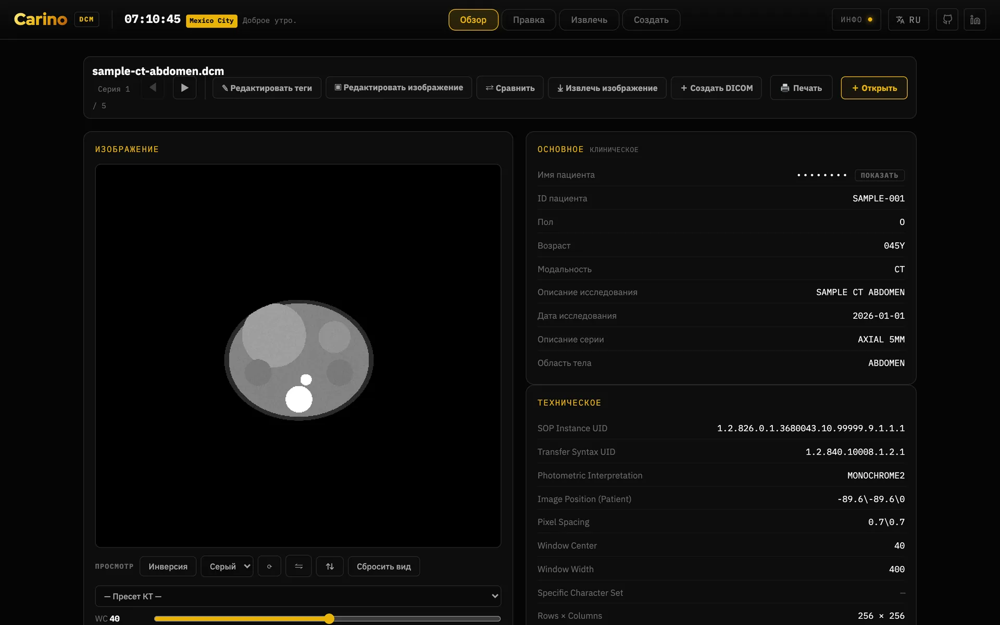
![Вкладка правки в редакторе: панель инструментов с кнопками «Анонимизировать всё», «Рандомизировать всё», «+ Тег», JSON, CSV, «Печать» и «Скачать всё»; полоса из пяти загруженных серий; фильтры по пациенту, исследованию, серии, изображению, оборудованию, UID и приватным тегам; сама таблица тегов, по строке на атрибут с номерами группы и элемента, описанием, VR и редактируемым значением; и в правой трети панель правки изображения — поворот, отражение, инверсия и закрашивание впечатанного текста, записываемые в сохранённые пиксели — над предпросмотром, свёрнутым значением окна/уровня и областью для перетаскивания файлов.](../img/ru/editor-tags.webp)
5. Это не медицинское изделие
Carino DICOM не является медицинским изделием. Он не сертифицирован, не допущен и не зарегистрирован ни одним регулятором ни в одной стране. У него нет ни маркировки CE как медицинского изделия, ни допуска FDA, ни регистрации в ANVISA, COFEPRIS или любом равнозначном органе. Никто не проводил в отношении него валидацию клинического применения.
Он не предназначен для первичной диагностики. Диагностического просмотрщика здесь нет: ни оконного преобразования, ни измерений, ни калиброванной цепочки отображения, ни контроля над монитором, на котором он показан. Читайте исследования на валидированной рабочей станции, которая у вас уже есть.
Сказано прямо, потому что это полезнее сноски:
- Если вы его разворачиваете, валидация — ваша. Соответствие нормативным требованиям, оценка рисков, защита данных и клиническая ответственность лежат на организации, которая вводит его в эксплуатацию, а не на проекте.
- Он распространяется без каких-либо гарантий, как и сказано в его лицензии AGPL-3.0.
- Он не заменяет ни ваш PACS, ни вашу РИС. Он — шлюз между ними и то, что позволяет отделению работать во время аварии, пока они не вернутся.
- И всё же относитесь к нему как к клинической инфраструктуре. То, что он не медицинское изделие, не делает его безобидным: он перемещает данные пациентов. Шифрование тома, брандмауэр, TLS, токен и резервные копии обязательны.
- Если от него зависит помощь пациенту, ответственность за это ваша, а не этой программы.
Всё это не пессимизм. Проект всерьёз исходит из того, что изображение, которое молча так и не пришло, хуже, чем сбой, — поэтому он скорее откажется запускаться, будет явно считать неудавшиеся подоперации и отправит лишнее, чем недоотправит. Он придерживает доставку ровно в одном случае, громко и обратимо: назначение, для которого правило требует обезличивания, когда обещанную очистку выполнить нельзя, — потому что профиль выключен или потому что профиль включён, но деидентификатор построить не удалось. И он говорит, что именно из двух, потому что чинятся они по-разному. Но программа может отвечать только за то, что делает сама; остальное — на вас.
6. Лицензия и где получить помощь
Carino DICOM выпускается под AGPL-3.0-or-later. Поскольку это сетевой сервер,
применяется §13: если вы запускаете изменённую версию как сервис, вы обязаны предложить её
исходный код тем, кто им пользуется. Сохраняйте файл LICENSE и ссылку на исходный код
при любом изменённом развёртывании.
- Исходный код и трекер задач на GitHub
- Политика безопасности — что защищено, что нет и как сообщить об уязвимости
- Как внести вклад
Нашли ошибку в этом руководстве — или перевод, который врач-рентгенолог никогда не произнёс бы? Заведите issue. Документация на русском, испанском и португальском — часть проекта, а не дополнение.
Carino DICOM · главная страница · часть мастерской carino.systems · AGPL-3.0-or-later.